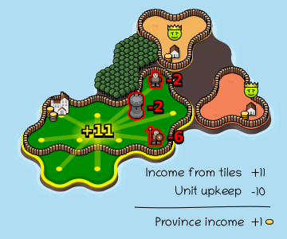
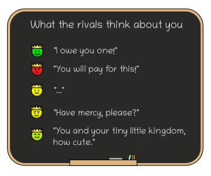

- You control the green province on the map.
- A province is a group of same-colored tiles with at least one
 town.
town.
- Your goal is to expand your province and destroy all rival towns.
- A province won't survive without a town , so make sure to protect yours!

- Each turn you gain one coin for each tile in your province.
- But you have to also pay the upkeep cost for every unit you own!
- Any surplus coins go to the treasury in the nearest town and you
can use them to buy more units.

- Notice that more advanced units have a much, MUCH larger upkeep cost!
- That means buying a knight too early is an easy way to destroy your economy and promptly lose the game!
- In general, villagers are the best unit for quickly expanding your province. Get the more advanced units only once you really need their hitting power!
- Units can move freely within their province (no range limit!) and used to conquer any tile adjacent to the province.
- But any tile protected by an enemy unit of equal of greater strength is off limits! For example a pikeman cannot conquer a tile protected by another pikeman.
- Every unit protects its adjacent tiles. Use that to prevent the enemy from invading your province!
- Towns have the same strength as a villager and castles have the same strength as pikemen.

- In Konkr, your opponents play a lot like real humans:
- They play to win.
- They hold grudges.
- They join forces against a dominant player.
- They may lash out when desperate.
- The emoji over enemy towns tells you what the rival thinks of you.
Don't get comfortable if they like you though! In the end they all play to win, and so should you.

- Units that didn't get paid turn into
 bandits.
This
is irreversible, so make sure
you are able to pay your units!
bandits.
This
is irreversible, so make sure
you are able to pay your units!
- Bandits serve only themselves. They move randomly around the map and steal income from any tiles they land on.
- The stolen coins are taken to a nearby Bandit
camp. These camps can spawn new bandits once there are at least 3
 coins
stored.
coins
stored.

- You can issue many actions in Konkr with keyboard - see the hotkeys on the left!
- When you click the Undo button on the start of the turn, you have options to Rewind time to the start of previous turn (you can do this only 3 times per game), or restart the current map.
- shift-click to buy multiple units in a row.
- ctrl-click buttons to bypass confirmation prompts.